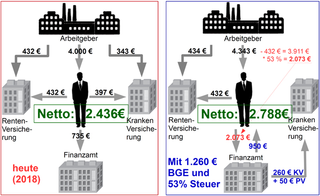

Vergleich von Netto-Einkommen und Abgaben-Belastung bei einem Brutto-Einkommen von heute 4.000 € (Steuerklasse 1)

Der Vergleich von Netto-Einkommen und Abgaben heute mit einem Steuersystem mit der Kombination Flat Tax und Grundeinkommen gilt in diesem Beispiel für folgende Ausgangswerte:
Brutto-Einkommen: 4.000 Euro
heute (2018):
zukünftig mit BGE:
- Einheitliche Steuer (flat tax) für alle Einkommen ab dem 1. Euro: 53 %.
- der Arbeitnehmer-Beitrag zur Renten- und Arbeitslosenversicherung ist steuerfrei: 434 Euro
(da Rente und Arbeitslosengeld-1 mit 52 % besteuert werden).
- Grundeinkommen einschließlich KV- und PV-Beitrag: 1.260 Euro.
- Beiträge zur Kranken- und Pflege-Versicherung sind im BGE enthalten: 310 Euro
(werden direkt an die jeweilige Krankenkasse überwiesen).
- ausgezahltes Netto-Grundeinkommen: 950 Euro.
- Das Brutto-Einkommen erhöht sich um bisherige Arbeitgeberanteile zur Kranken- und Pflege-Versicherung.
- Der Arbeitgeber-Beitrag zur Renten- und Arbeitslosenversicherung bleibt wie bisher: 434 Euro.
Letzte Bearbeitung: 16.03.2018, 22:22